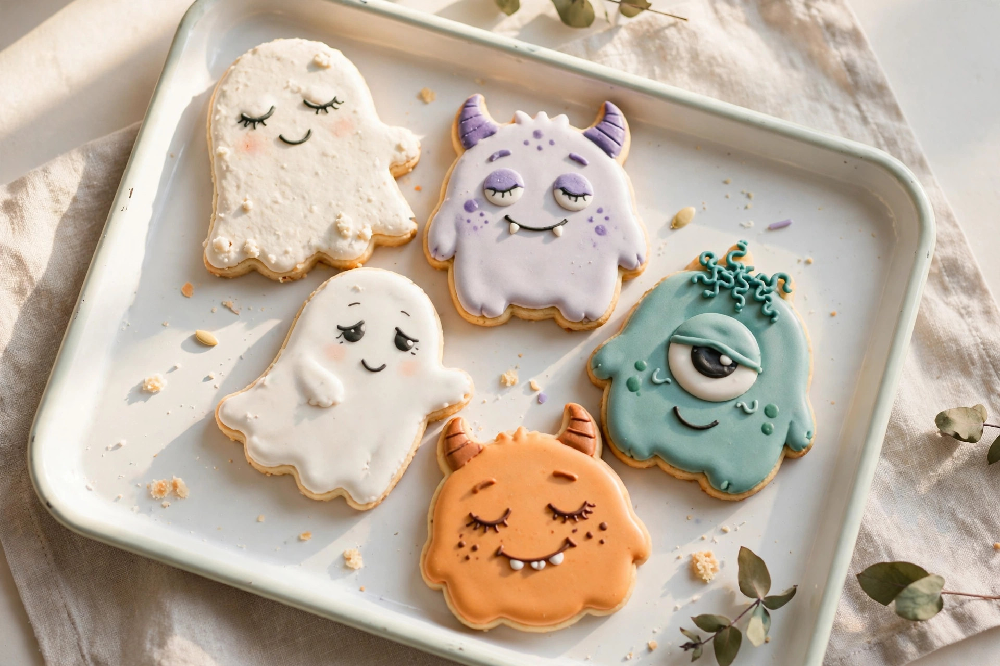

Halloween Bake Disasters (and How to Serve Them Anyway)

Halloween baking has the highest disaster rate of any holiday, and it's not even close. You're working with melted chocolate faces, dyed-everything frosting, and a deadline measured in trick-or-treaters. The photos on the internet lied to you; your kitchen is telling the truth. Below: the five classic Halloween bake disasters, exactly what's causing them, and how to rescue each one before the party starts.
The usual suspects
| Disaster | Symptom | Rescue |
|---|---|---|
| Caramel sliding off the apples | Pools at the bottom, apple gleaming through | Wash apples in hot water with a splash of vinegar, dry completely; chill them first so the warm caramel firms up fast |
| Dry ice in the punch | Fantastic fog, genuine safety hazard | Keep dry ice in a separate water container near the bowl — never inside the drink; ventilate the room |
| Guacamole gone brown | Your graveyard dip looks like a graveyard | Press plastic wrap directly onto the surface, no air gap; brush lime juice across the top first |
| Deviled egg eyeballs weeping | Watery filling, crying pupils | Ice-bath the eggs 10–15 minutes after boiling, dry the whites thoroughly, use full-fat mayonnaise |
| Soggy mummy dogs | Gummy, underbaked dough on a wet hot dog | Pat the hot dogs dry before wrapping; keep wrapped dogs refrigerated until bake time, and bake right before serving |
| Popcorn ball lump | Sticky mess that won't hold shape | Wait roughly 5–10 minutes after the syrup is mixed in, then shape with buttered hands |
The 30-minute Halloween rescue plan
Guests arrive in half an hour and the spread looks haunted in the wrong way. Work in this order:
- Fix the apples. If the caramel is sliding, it's the wax coating on store-bought apples. Dunk them in hot water with a splash of vinegar for a few minutes, dry them completely, and chill them in the fridge — warm caramel firms up fast against cold fruit. Re-dip the worst offenders.
- Chill the eggs. Watery deviled-egg filling usually means the eggs weren't cooled before assembly. An ice bath for ten to fifteen minutes right after boiling, followed by thoroughly dried whites, heads off most of the moisture. Mix the filling with full-fat mayonnaise — lighter versions break down faster.
- Save the guacamole. The browning is oxidation, and it's happening right now. Press plastic wrap directly against the surface with no air gap, and brush a layer of lime juice across the top first. The acid buys you extra time.
- Pat the mummies. If the mummy dogs are wrapped but not yet baked, pat each hot dog dry with a paper towel before it goes in — the moisture from the hot dog is what turns the dough gummy. Keep them in the fridge until the oven is hot, and bake right before serving.
- Time the popcorn. Shaping popcorn balls at the wrong moment is the classic failure: syrup still too hot won't hold, syrup left too long turns stiff. Wait roughly five to ten minutes after the syrup is mixed in, coat your hands lightly with butter or cooking spray, and shape fast.
- Move the dry ice. Dropping dry ice straight into the punch bowl makes a great photo and a real hazard — it sits at roughly minus 109 degrees Fahrenheit and can burn skin or worse if swallowed. Move it to a separate container of water next to the bowl: same fog, no risk. Crack a window for ventilation.
When spooky turns cute: the reframe
Then there's the disaster nobody's technique can prevent: you aimed for terrifying and landed on adorable. The ghost cookies look sleepy instead of scary. The monster cupcakes have friendly faces. Your intended "Boo!" lettering reads more like "Bod" — which, to be fair, is a funnier outcome than anything you planned.
This is not a failure. This is the universe improving your concept. Cute Halloween bakes are wildly popular with kids, with grandparents, and with everyone who secretly finds horror movies stressful. Lean into it: rename the spread. The "terrifying tombstone brownies" become "the friendly graveyard." The melty-eyed monsters become "the sleepy monster crew." Presentation is nine-tenths of Halloween — if you serve it with confidence and a good name, the cute ones become the ones everyone photographs.
And if all else fails, remember the genre's greatest hits: the donut that catfished its buyer, the cake that "needed to complete its thought," the cupcake with black frosting that stained everyone's mouth (note to self: warn the guests). A Halloween bake that makes people laugh has done its job. Scary was optional; delicious was the assignment.
What success looks like
Success on Halloween night is simple: everything is served, nobody got hurt, and the table has at least one item people photograph. The apples have caramel on them (most of it). The guacamole is green (mostly). The ghosts are cute (definitely). You did not need to warn anyone about the dry ice, because you moved it. Taste first, photograph second, apologize never — even on the spookiest night of the year.
FAQ
Is dry ice really that dangerous?
It sits at roughly minus 109 degrees Fahrenheit — enough to burn skin on contact and dangerous if swallowed. Keep it in a separate water container near the punch bowl instead of inside the drink, and keep the room ventilated.
Why won't the caramel stick to my apples?
Almost always the waxy coating on store-bought apples. Dunk the apples in hot water with a splash of vinegar, dry them completely, and chill them before dipping — warm caramel firms up much faster against cold fruit.
My ghosts came out cute instead of scary. Should I redo them?
Absolutely not. Rename them the sleepy monster crew and serve them with confidence. Cute beats scary with half the party anyway.